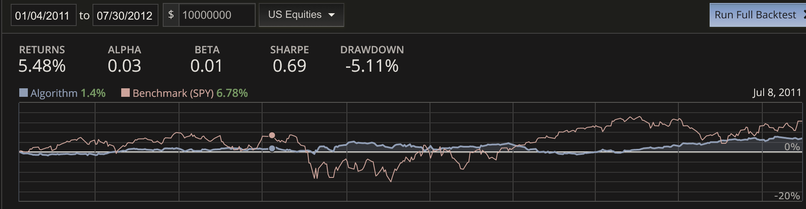
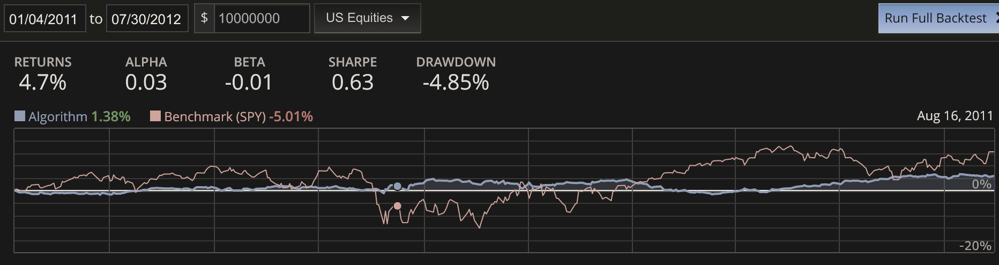
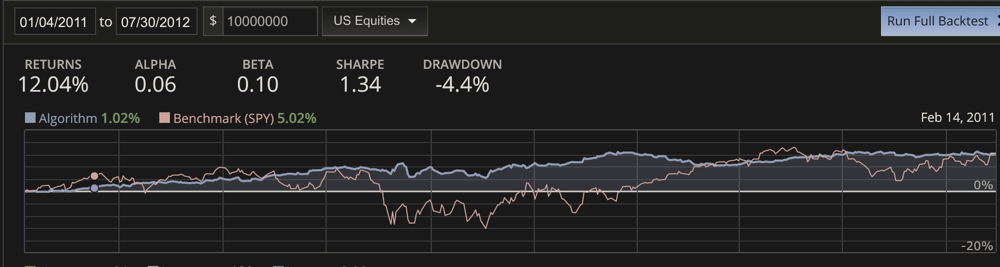
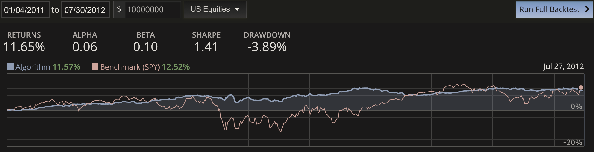

Application of Machine Learning in Quantitative Finance
Two Worlds Colliding
Markets are noisy and ever changing; moreover, fluctuations can be rather large and persistent. The nature and character of markets offer significant challenges for machine learning (ML) algorithms. For instance:
- low signal-to-noise
- 'signals' that convey information about markets are often highly obscured by 'noise'.
- ML algorithms are designed to recognize or approximate patterns that are the most prevalent, and markets are mostly noise.
- regime changes
- markets are constantly evolving, fluctuations can be large, and statistical characteristics can change quickly.
- current ML algorithms are specialists that do not handle outliers and new situations well.
- market inferences should be robust
Recognition of the conflicting nature of markets and the current crop of ML algorithms is important in devising new approaches to using the ideas learned from ML in quantitative finance.
Emphasis here is on introducing the powerful, foundational ideas of ML to the design of trading algorithms as oppose to using existing ML methods as tools for trading. Or as Steve Jobs famously quoted of Picasso in an interview: “good artists borrow, great artists steal.”
Caveat: The secretive world of traders mean that what is presented here could very well have been known for decades, and this work is embarrassingly elementary.
Ideas That Transcend
What ideas are considered great and transcend boundaries are to some degree subjective. Nevertheless, the following ideas from ML are at least worthy of consideration.
1) Regularization of complexity as part of the learning process. 2) Boosting a set of weak learners into a single strong learner. 3) Stochastic gradient descent to drive exploration.
There are more but these are enough to form the foundation of a trading algorithm with desirable properties. The missing pieces are a model and the data structure(s) to represent the model, a decision mechanism to establish what is 'better', and a set of features.
The adage that, given a set of relevant features that span the distinguishing properties of the patterns of interest, just about any machine learning algorithm will perform well is not far from the truth. However, in the context of trading signals for markets though, these features will be very noisy, their relevance may be fleeting, yet they need to be robust. 'Quants' who have applied ML methods to trading will attest to significant impact of these problems. A trading algorithm would likely be well-served by addressing these inherent characteristics of trading signals.
Domain expertise is important for trading. End-to-end techniques like Deep Neural Nets may someday 'crack' the code and derive effective representations that are also interpretable. Meanwhile, developing methods that incorporate existing understanding of market behavior is the goal. A major assumption is the availability of a set of 'weak' features in the sense described above.
Restate Again
Let's match what machine learning has to offer to the difficulties that need to be addressed. The term 'alpha' will be loosely associated with informative signals that are conducive for trading decisions.
Regularization
Regularization can be interpreted in several ways. A useful view is that regularization is used to distinguish 'noise' from 'signal' with regards to the weights parameterizing a family of models under consideration. 'Signal' weights should be much larger than 'noise' weights. Something like regularization is needed for trading features. In addition to reducing the 'noise' associated with an alpha, parsimonious models are more robust and generalize better.
Boosting
Boosting, as in techniques like AdaBoost and Random Forest, takes a set of weak learners that can be implemented in a uniform manner, and specify a scheme that allows for each to contribute, as part of a larger collective, to the classification or approximation problem at hand. In addition, each weak learner is encouraged to be a specialist that focuses its predictive powers on a limited subset of the whole domain. An assumption is that successful quantitative trading is possible given a set of features with at least some alpha. If so, boosting seems to be an attractive methodology for trading.
Stochastic Gradient Descent
Stochastic gradient descent, by adding randomness and averaging over a subset to the directed exploration process in learning, enhances the robustness and predictive capabilities of ML algorithms. In addition to making learning large problems (high dimensions and large data sets) possible, sampling and averaging allows for excursions that may not occur if considered as a whole. Introduction of randomness mitigates the undesirable tendency to be 'stuck' in saddle points of high dimensional curved spaces during learning. Again, these are attractive properties that address what is problematic in trading.
Promising Start
Under the directive of incorporating fundamental ideas from ML to enhance existing practices in quantitaive trading, a simple algorithm was constructed with components analogous to those from ML described in the last section. Again, the emphasis in on capturing the essence of the role rather than duplicating the algorithms in a differnt setting.
Alas, the nature of trading is to share little and protect intellectual properties. Therefore, details will be scant. The main take-away is that this direction of research could be fruitful: use the ideas, not a particular implementation. In a business where most everyone is sharp and hungry, some hints may be all that is needed to give away everything. Here goes ...
The work presented here were developed on the Quantopian platform. Some well-studied signals with 'weak' alphas - they have lost their effectiveness today - were examined for the possibility of being enhanced in systematic fashion.
Given that the results are compared on a relative basis, practicle concerns such as commissions (fees paid to trade) and slippage (advertised prices are less than what is actually paid) could be neglected. But, these results do include slippage and commission. They were developed with the hopes of being profitable algorithms after all. The period will be from 01/04/2011 to 07/30/2012 where the signals under consideration still had some alphas, and a starting capital of $10,000,000. Slippage is 3 basis points with a volume limit of 0.1. Per trade cost is $2.95. Do not worry if these numbers are gibberish to you. Remember, the relative performance is what is being illustrated.
Signals (or Factors)
The signals used are commonly refered to as factors. Factors are quantities - eg. price/earnings (P/E) - associate with an equity which are then sorted by some criteria. The sorted list of values are then typically bucketed into quantiles. The virtue of being in a quantile is consider indicative of some important difference from objects in another quantile. For instance, the premise may be that equities within the top 10% of P/E will behave markedly different from equities in the botton 10% in a manner that could lead to profitable trades.
For this demonstration, the factors under consideration are SimpleMovingAverage(...) of prices (and ratios of) as provided by the Quantopian libraries
sma_10 = SimpleMovingAverage(inputs=
[USEquityPrices.close],
window_length=10,
mask=shorts_mask)
sma_3 = SimpleMovingAverage(inputs=
[USEquityPrices.close],
window_length=3,
mask=shorts_mask)
factor = (sma_3/sma_10)
and a slight variation of Momentum coded as
class Momentum(CustomFactor): """ Momentum Factor """ inputs = [USEquityPrices.close, Returns(window_length=21)] window_length = 252 def compute(self,today,assets,out,prices,returns): out[:] = ((prices[-21] - prices[-252])/prices[-252] - (prices[-1] - prices[-21])/prices[-21]) / np.nanstd(returns, axis=0)
Results
These factors will be used for selection in a long/short (L/S) portfolio with a dollar weight of 54% longs and 46% shorts. Instead of quantiles, the top and bottom 100 securities are candidates for investment allocation. On any day, the actual number of longs and shorts can vary depending on liquidity and other considerations. Note that the date on the right hand side reflects where the cursor (dots) was located.

Increasing the number of candidate securities is sometimes used to trade-off gains for a reduction in variability or drawdown. Using 120 instead of 100 produced slightly different numbers. Notably the Sharpe ratio decreased so the trade-off favors using 100 in this case.

Using the same factors as sources of alpha, a simple implementation of the aforementioned ideas from machine learning were used in an attempt to enhanced the 'information' guiding selection. Again, the top and bottom 100 securities were considered each day.

Every performance metric improved except beta - which is more indicative of both the benchmark and algorithm making similar gains while the stock market was doing 'well' for longs.

Increasing the number of candidates to 120 again exhibited a trade-off of gains for volatility. This time however, the Sharpe ratio increased along with a reduced drawdown. A rather encouraging result; the incremental add of securities contributed additional alpha - a sign that the algorithm is effective in reducing 'noise' even for what would be considered 'down-the-line' selections.